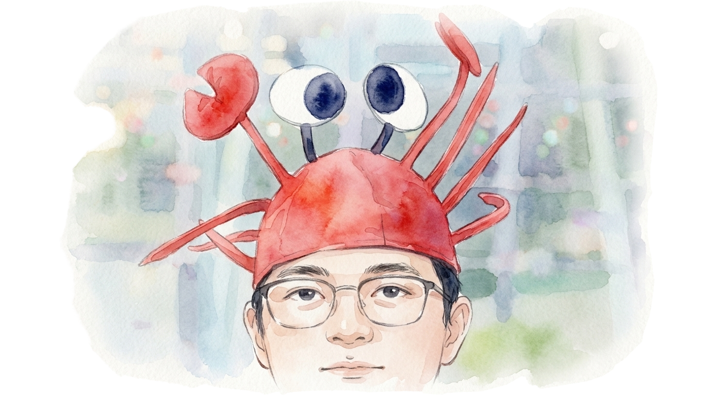

"龙虾"背后的AI焦虑症
焦虑解剖
会场之外，这种情绪并非只存在于"龙虾"人群之中。
在社交媒体的信息流中，类似的内容几乎无处不在。"AI正在取代人类工作""不学AI就会被淘汰"的论调，被不断复制和放大。香港浸会大学大四学生吴思泽，就是这种叙事的长期接收者之一。
令他印象最深刻的，是一张关于"AI取代各行业概率"的预测图。"除了服务业和医学，大部分行业都在50%以上，我们传媒专业也差不多。"他说，"虽然有点危言耸听，但还是会忍不住去看。"
与“是否真的被取代”不同，暴露度代表的是一个人日常接触AI、被提醒风险的频率。这种高频接触，会不断强化“我可能被替代”的认知，从而放大焦虑。
"暴露度"解释了谁更容易焦虑。
输入你的职业，查看 AI 暴露指数。
这种叙事制造出一种典型的情绪——"不能错过"。
在朋友圈和短视频平台上，几乎所有人都在谈论AI、使用AI。有人展示用AI生成的内容，有人分享效率翻倍的经验。如果不跟上，仿佛就会被同龄人甩开。
这种焦虑往往转化为具体行为：不断点击新的AI工具，收藏大量教程，却很少真正深入；尝试一个又一个产品，但始终停留在"会用"的层面。
吴思泽也是如此。他接触过多种AI工具，从大模型到音声训练、图像生成，再到OpenClaw这样的智能体系统，但始终没有持续使用。"更多还是尝鲜，摸清大概能力就不怎么用了。"他说。
与"错过"的焦虑并行的，是另一种更直接的担忧——被取代。
"如果AI现在就能把工作做得更好，那我可能会直接失业。"他说。即便如此，他也清楚，AI正在成为一种新的竞争门槛，"不会用AI的话，和别人比还是吃亏的。"
数字劳动力的诱惑，来自人类产能的极限。
人工智能技能和数字化劳动力是最重要的劳动力战略
但这种焦虑，在不同位置的人眼中，呈现出另一种解释。
同样毕业于香港浸会大学的创业者袁琳，给出了更为辩证的判断。他创办的V0.AI作为网页Agent应用已完成天使轮融资，用户覆盖100多个国家。
在他看来，"养龙虾"并不是焦虑的来源。
"焦虑每个时代都有。"他说，"龙虾只是一个被放大的载体。"
换句话说，真正驱动这种情绪的，并不是某一个具体工具，而是技术更替中反复出现的那种不确定性——当旧的路径开始失效，而新的路径尚未稳定，人们便本能地寻找一个可以抓住的"入口"。
而"龙虾"，恰好填补了这个位置。
AI依赖
比起表层的焦虑情绪，更值得关注的，是人们与AI关系的变化。
来自 China Youth Daily 与 Soul 联合发布的《2025年大学生AI使用心态洞察报告》显示，65.9%的大学生在遇到问题时，第一反应是求助AI。
这个变化的关键，不在于"使用AI"，而在于"第一反应"的转移——从主动搜索、筛选和判断信息，到直接获得一个已经整理好的答案。信息获取的路径，正在从"多源筛选"，转向"一步到位"。
对大学生来说，AI 已经不只是一种工具
这种依赖很快从"查资料"扩展到更多层面。同一份报告显示，58.1%的受访大学生会将AI用于学术或专业咨询，45.3%会用于情感陪伴或解压。AI开始同时介入知识获取与情绪调节，从工具逐渐演变为一种"生活接口"。
在组织层面，这种趋势也在被进一步强化。微软的研究显示，超过80%的企业领导者计划在未来一年内将Agent纳入核心战略，用以扩展团队能力。换言之，不只是个人在依赖AI，组织本身也在推动这种依赖成为常态。
员工们会求助于人工智能来做人类无法做的事情
这也解释了一个看似矛盾的现象：人们一边对AI感到焦虑，一边又越来越离不开它。当"向AI求助"成为第一反应，当效率压力不断上升，人们需要的，已经不只是理解AI，而是一个可以随时调用、能够直接替自己行动的工具。
为什么是龙虾？
那么问题变成：当人们需要一个"可以直接行动"的工具时，为什么是OpenClaw这样的智能体？
在技术层面，它所代表的，并不只是"更强的AI"，而是一种不同的结构。
计算机科学研究者麻时钞指出，OpenClaw本质上是一个将大语言模型转化为"可调用工具、可执行工作流"的平台。它不再停留在对话层，而是通过三层结构运行：上层接收用户指令，中层负责任务编排与决策，下层调用具体工具执行操作。
换句话说，它不只是"告诉你怎么做"，而是"直接帮你去做"。
这种变化，在具体场景中体现得尤为明显。比如，一个传统流程中需要多个步骤完成的任务——整理会议录音、提取重点、生成行动清单、再同步到日程或文档——过去往往需要在不同软件之间反复切换。而在智能体框架下，这些步骤可以被压缩为一条连续执行的指令，由系统自动完成。
为了支撑这种能力，OpenClaw内部引入了一系列机制： "Skills"用于引导模型在何时调用工具； "Heartbeat"让系统周期性运行，主动发现待处理任务； "Memory"则以文本形式记录信息，作为长期上下文持续参与决策。
这些设计的共同目标，是让AI从"回答问题"，转向"执行流程"。
也正因如此，它所提供的，并不仅是信息，而是行动本身。
OpenClaw 落在哪个 AI 热词簇里？
袁琳看来，OpenClaw并不只是一个"智能体工具"，而更接近一种新的运行时（runtime）——它把原本需要人工分步完成的流程，压缩成一条可以持续运行的链路。
它的爆火，并不完全源于能力的跃迁，而在于一种使用方式的改变——从"问答案"，到"让系统替你完成一整件事"。
卖铲人的黄金时代
当焦虑成为普遍情绪，它也迅速被转化为可售卖的产品。
与每一轮技术浪潮相似，最先捕捉机会的，往往不是技术的最终使用者，而是围绕技术提供服务的"卖铲人"。
围绕"养龙虾"，一条完整的商业链条正在迅速成型。从电商平台上的"代安装"服务，到"硬件+部署+培训"的打包方案，再到各类"养虾教程""AI自动化课程"，不同层级的变现路径正在被快速构建。
从"试用一下"到"养成工作流"，成本曲线为什么会突然变陡？
假设日均消耗 12.5k tokens，相当于 30 天累计 375k tokens。用户把 AI 当成搜索替代品，一天只问几次，调用频率低、上下文短，成本大体可控。
假设日均消耗 55k tokens，相当于 30 天累计 1.65M tokens。一旦开始让 AI 连续处理检索、摘要、改写、格式化等步骤，调用次数和上下文长度会一起抬升。
假设日均消耗约 592.7k tokens，相当于 30 天累计 17.78M tokens。如果再叠加心跳轮询、循环调用、失败重试与长上下文记忆，账单增长就会从“多一点”变成“陡很多”。
阶段假设：阶段 1 为 12.5k tokens/日，阶段 2 为 55k tokens/日，阶段 3 为 592.7k tokens/日。
依据说明：OpenAI 在《Introducing GPT-4.1 in the API》中给出 GPT-4.1 的 blended pricing 为 $1.84 / 1M tokens；该价格基于“typical input/output and cache ratios”。本图直接采用官方 blended pricing 换算，不再自行拆分 input、cached input、output 权重；三阶段 Token 用量仍为情境假设，用于展示工作流复杂度上升时的成本斜率变化。
数据来源：OpenAI《Introducing GPT-4.1 in the API》与 OpenAI API Pricing 页面。
类似的分工，也出现在企业层面。微软报告显示，78%的领导者正在考虑招聘AI专属岗位，在前沿企业中这一比例达到95%。AI Agent Specialist已进入未来重点招聘名单。
| 岗位 | 占比 |
|---|---|
| AI 培训师（AI Trainer） | 32% |
| AI 数据专家（AI Data Specialist） | 32% |
| AI 安全专家（AI Security Specialist） | 31% |
| AI Agent 专家（AI Agent Specialist） | 30% |
| AI 投资回报分析师（AI ROI Analyst） | 29% |
从个人到组织，围绕AI的"使用门槛"，正在被系统性地外包。
政策变动
这种狂热并非无缘无据。在深圳龙岗，AI 不再只是实验室里的代码，而是一个城区全速运转的"操作系统"。2026年3月初，龙岗区发布了备受瞩目的《支持 OpenClaw 与 OPC 发展的若干措施》（简称"龙虾十条"），试图通过政务层面的"All in AI"战略，将龙岗打造为全球 AI 智能体应用的"首发地"。
政策的力度令人咋舌：不仅在全区推广建立"龙虾服务区"，提供零成本的 OpenClaw 部署服务，甚至对在国际开源社区贡献关键技能包的开发者，给出最高200万元的现金补贴。在这个号称"全国工业百强区七连冠"的腹地，政府正试图用公共数据开放、算力补贴和"OpenClaw 数字员工应用券"，将那只红色龙虾从极客手中的玩具，变为工厂流水线和写字楼里的生产力引擎。官方的下场背书，无疑给会场里那些辞掉工作、押注龙虾的"养虾人"们注入了一剂强心针，也让这场技术的阶级跃迁赛，蒙上了一层官方叙事的金边。
"龙虾十条"落在地图上，意味着什么？
中国部分地区政务系统接入 OpenClaw 进展梳理
| 省/市 | 政府部门 | OpenClaw 部署情况 | 应用场景 | 应用类型 |
|---|---|---|---|---|
| 北京 | 北京市政务服务管理局 | 已完成基于 OpenClaw 框架的政务服务 Agent 私有化本地部署，全适配国产信创环境 | 整合 12345 热线知识库、自动解答企业群众办事咨询，辅助接线员生成标准答复话术 | 政务服务助手 |
| 中关村科学城管理委员会 | 基于 OpenClaw 低代码开发框架完成招商智能 Agent 适配开发 | 自动生成招商项目分析报告，提供企业落地政策咨询，对接园区入驻配套资源 | 招商智能辅助 | |
| 浙江 | 省数据管理局 | 完成全参数优化版 OpenClaw 政务定制版，在“浙里办”平台本地化部署 | 辅助政务公文起草、政策文件解读、跨部门协同办公，提升机关内部办公效率 | 智能办公 |
| 杭州市上城区政务服务中心 | 基于 OpenClaw 开发“政务帮办 Agent”，完成全场景上线，适配窗口与移动端双端 | 为办事群众提供全程导办、材料预审、办理进度查询，辅助窗口人员减负提效 | 智能导办帮办 | |
| 广东 | 省商务厅 | “粤商通”平台全面接入基于 OpenClaw 开发的外贸服务智能助手，适配跨境业务规则 | 自动解答外贸企业政策咨询、生成报关流程指引、预警跨境贸易合规风险 | 企业服务 |
| 深圳市政务服务数据管理局 | 完成 OpenClaw 框架移动适配，开发移动端政务智能助手 | 市民可通过粤省事/微信端随时调用 Agent 办理查询、预约、投诉等业务，实现“随时办随身办” | 移动政务助手 | |
| 四川 | 成都市大数据集团 | 完成信创环境下 OpenClaw 全尺寸模型本地化部署，落地成都智慧政务平台 | 辅助 12345 热线诉求智能分类、自动转办对应部门、生成每周热点诉求分析报告 | 诉求智能分拨 |
| 四川天府新区管委会 | 基于 OpenClaw 开发的项目审批智能助手完成测试上线 | 自动预审项目申报材料、识别填报错误、解答审批流程疑问，压缩项目审批时长 | 智能审批 | |
| 山东 | 青岛市政务服务和数据管理局 | 完成 OpenClaw 大模型政务定制版适配部署，推出“青岛政务智帮办” | 支持社保、医保、公积金等高频民生业务的智能咨询、材料填报指导 | 便民服务助手 |
说明：该图卡为新闻版式复刻示意，条目文字按你提供的截图信息进行结构化重排。
随着"龙虾"在民间与企业的野蛮生长，象征着机会的红色，正逐渐带上监管警告的意味。2026年3月，中国国家互联网应急中心（CNCERT）针对 OpenClaw 正式发布风险提示，直指其默认安全配置的"脆弱性"。官方通报指出，由于智能体具备读写文件与自动执行指令的最高权限，一旦沙盒机制失位，攻击者可通过"指令诱导"（Prompt Injection）直接接管系统，甚至在工业场景中导致产线失控或核心设计文件外泄。
这种担忧已迅速转化为行政侧的"紧急刹车"。据了解，包括金融机构、国有企业及政府机关在内的核心部门，已明确限制在办公设备上部署此类开源智能体软件。与此同时，国家网信办等五部门联合发布的《人工智能拟人化互动服务管理暂行办法》也为"养虾人"划定了法律边界：任何具备自主执行能力的智能体，不仅需要履行算法备案，更必须在执行任务时具备显著的"AI身份标识"。从"技术尝鲜"到"合规深水区"，政策红线的收紧正向所有人传递一个明确信号：在智能体走向物理世界执行任务的"十五五"开局之年，安全与合规，已成为比 Token 消耗更昂贵的入场券。
为焦虑买单的代价
麻時鈔博士的警告更为具体，也更接近现实的边界。
在他的描述中，OpenClaw并不是一个"无害的效率工具"，而是一个可以直接介入系统层面的执行体：它能够运行命令、修改文件、自动操作浏览器。如果沙盒机制不完善，或者被用户主动关闭，一次错误的调用，影响的就不再是一个对话窗口，而是整台机器乃至关联账户。
风险并不总以"出错"的形式出现。更常见的，是在看似正常的运行中悄然累积。
例如，当代理读取了不受信任的网页内容，这些内容本身就可能被设计成"诱导模型执行特定操作"的提示；又或者，Memory模块以Markdown明文形式存储在本地工作空间，日志与上下文在调用过程中不断被引入，用户并不总能意识到哪些信息已经被模型"看见"。与此同时，频繁的心跳轮询、长上下文加载与多轮工具调用，会在后台持续消耗Token——成本不是一次性发生，而是在每一次"正常使用"中被放大。
最终形成的，是一种典型但少被意识到的使用轨迹：前期投入时间与金钱完成部署，中期频繁尝试各种场景，后期逐渐减少使用频率，直到系统被闲置在电脑的一角。看似是"没有用好工具"，但更深层的问题在于——这个工具从一开始，就未必对应一个真实存在的需求。
袁琳将这种状态概括为一种更隐蔽的焦虑形式——"Token焦虑"。
"有人会因为当天Token消耗超标而睡不着。"他说，"但如果你真的有业务场景，谁会在意用了多少Token？哪怕1万个Token能解决问题，那就是合理成本。相反，如果场景本身是假的，你就算每天消耗再多，也只是放大焦虑。"
换句话说，人们真正付出的，并不只是金钱成本，还有时间、注意力，以及对"必须跟上"的持续心理负担。
焦虑并没有被解决，只是被转化为另一种可以计费的形式。
当龙虾褪去光环
技术浪潮从来不只关乎技术本身。它总是伴随着新的生意模式、新的投机空间，以及新的集体心理。
"养龙虾"的流行，正是这种复杂结构的一个切面。它既是工具，也是符号——象征着效率、机会，以及某种不愿被时代抛下的努力。
但当热度逐渐褪去，一个更现实的问题开始浮现：当人人都可以使用同样的工具，真正的差异还剩下什么？
丁宁将这个变化归结为"operation level"的压缩。GitHub Copilot的一项受控实验显示，在完成同一项JavaScript HTTP server编码任务时，使用AI辅助的开发者完成速度比对照组快55.8%。这并不意味着开发者被替代，但它说明了一点：那些可以被拆分、标准化、重复执行的操作，正在被系统性压缩。
操作层面的自动化，最直观地体现在时间被压缩
当这些能力逐渐成为基础设施，它们就不再构成优势。
丁宁提出的"生产力三要素"——生产者、生产工具与生产对象——提供了一个更底层的观察框架。当生产工具发生跃迁，从搜索引擎到AI代理，从"获取信息"到"直接执行"，变化的不只是效率，还有分工方式本身。原本需要人工完成的一系列步骤，被压缩为一条可以被调用的流程。
也正因如此，"养龙虾"才会持续吸引普通人。它所承诺的，不只是技术能力，而是一种对时间的重新分配：将原本分散、重复、耗时的任务打包交给机器处理。
但当这种能力变得普遍，一个新的问题随之出现——如果执行不再稀缺，那么判断会成为什么？
袁琳给出的答案是，将人的角色收缩为两件事：意图工程与验证工程。前者是明确"要做什么"，后者是判断"结果是否足够好"。在这一框架下，人的价值不再体现在完成任务，而体现在对方向与质量的把控。
"AI的聪明和人的聪明不是一回事，"他说，"它可以很快给出答案，但并不代表它知道什么是对的。"
这种区分，或许正是焦虑的分界线。
微软的一组数据提供了另一种视角：在被定义为"前沿企业"（Frontier Firms）的组织中，93%的员工对未来工作机会持乐观态度，而仅有21%担心AI会取代自己，显著低于全球平均水平。
前沿企业正在培养“智能体管理者”
也许真正拉开差距的，并不是"是否接触AI"，而是能否将AI从一种制造焦虑的外部压力，转化为一种可被理解、被使用、并最终被驾驭的生产工具。而"龙虾"，不过是这场转变中最早被放大的一个样本。